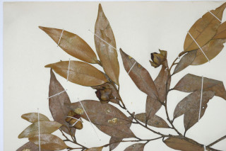

Images :



| Habit : | Trees up to 25 m tall. |
| Leaves : | Leaves simple , alternate , distichous ; petiole 0.6-0.9 cm, canaliculate ; lamina 5-8 x 1.3-2.5 cm, elliptic-lanceolate , apex acute or gradually acuminate with blunt tip, base acute to attenuate , coriaceous ; midrib flat; secondary_nerves ca. 6 pairs, ascending, lower most pairs close; tertiary_nerves prominently reticulate . |
| Inflorescence / Flower : | Flowers unisexual ; male flowers sessile on axillary short peduncle ; female flowers solitary with large leathery folded foliaceous calyx lobes . |
| Fruit and Seed : | Berry , globose , ca. 4 cm across, black pubescent ; seeds 4, oblong , compressed. |